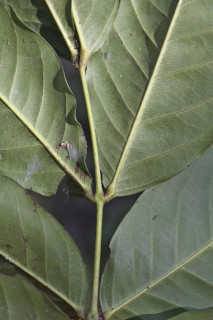
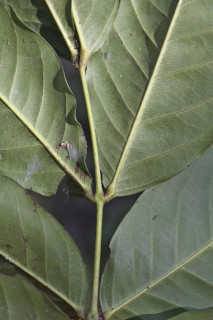
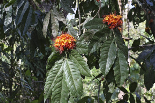
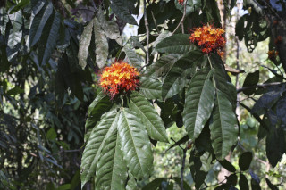

Small trees, up to 5 m tall.
5 ಮೀ. ಎತ್ತರದವರೆಗೆ ಬೆಳೆಯುವ ಮರಗಳು.
5 മീറ്റര് വരെ ഉയരത്തില് വളരുന്ന ചെറുമരങ്ങള്.
சிறிய மரம் 5 மீ. உயரம் வரை வளரக்கூடியது
Trunk often tubercled; bark lenticellate, dark, shallowly fissured; blaze purplish.
ಕಾಂಡ ಹಲವು ಸಂದರ್ಭಗಳಲ್ಲಿ ಗುಬುಟುಗಳ ಸಮೇತವಾಗಿರುತ್ತದೆ; ತೊಗಟೆ ಮಸುಕು ಬಣ್ಣ ಹೊಂದಿದ್ದು ವಾಯುವಿನಿಮಯ ಬೆಂಡು ರಂಧ್ರ ಸಮೇತವಿದ್ದು, ಆಳವಿಲ್ಲದ ಸೀಳಿಕಾ ಮಾದರಿಯಲ್ಲಿರುತ್ತವೆ. ಕಚ್ಚು ಮಾಡಿದ ಜಾಗ ಕೆನ್ನೀಲಿ ಬಣ್ಣ ಹೊಂದಿರುತ್ತದೆ.
തായ്ത്തടി മിക്കാവാറും മുഴപ്പുകളോട് കൂടിയതാണ്; ശ്വസനരന്ധ്രങ്ങളോട് കൂടിയതും, ഇരുതും, ആഴമില്ലാത്ത വിള്ളലുകളോട് കൂടിയതുമായ പുറംതൊലി; വെട്ട്പാടിന് ഊതനിറം.
தண்டில் கழலைகள் காணப்படும்; மரத்தின் பட்டை லெண்டிசெல்லேட், மரத்தின் பட்டை மெலிதான வெடிப்புகளுடையது; உள்பட்டை பர்புள் நிறமானது.
Branchlets terete, glabrous.
ಕಿರುಕೊಂಬೆಗಳು ಗುಂಡಾಗಿದ್ದು ರೋಮರಹಿತವಾಗಿರುತ್ತದೆ.
ഉരുതും, അരോമിലവുമായ ഉപശാഖകള്.
சிறிய நுனிக்கிளைகள் குறுக்குவெட்டுத் தோற்றத்தில் வளையமானது, உரோமங்களற்றது.
Leaves compound, paripinnate, alternate, distichous; stipules caducous; rachis pulvinate, 7-30 cm long; petiolule 0.1-0.6 cm long; leaflets opposite, 4-6 (-12) pairs, lamina 6-31 x 1.5-9 cm, narrow elliptic-oblong or lanceolate, apex acute to acuminate, base acute to rounded or subcordate, subcoriaceous, glabrous; midrib raised above; secondary_nerves ca. 11 pairs, looped; tertiary_nerves reticulate.
ಎಲೆಗಳು ಸಮಸಂಖ್ಯೆ ಗರಿರೊಪಿ ಸಂಯುಕ್ತ ಮಾದರಿಯವು ಹಾಗೂ ಪರ್ಯಾಯ ಜೋಡನಾ ವ್ಯವಸ್ಥೆಯಲ್ಲಿದ್ದು ಕಾಂಡದ ಎರಡೂ ಕಡೆ ಎದುರು ಬದರಿನ ಲಂಬ ಸಾಲಿನಲ್ಲಿರುತ್ತವೆ; ಕಾವಿನೆಲೆಗಳು ಉದುರಿ ಹೋಗುವ ರೀತಿಯವು; ಅಕ್ಷದಿಂಡು ಉಬ್ಬಿದ ಬುಡವನ್ನು ಹೊಂದಿದ್ದು, 7 ರಿಂದ 30 ಸೆಂ. ಮೀ. ಉದ್ದವಿರುತ್ತದೆ; ಕಿರು ಎಲೆಗಳು 4 ರಿಂದ 6 (12ರ ವರೆಗೆ) ಜೋಡಿಗಳಿದ್ದು ಅಭಿಮುಖಿಗಳಾಗಿರುತ್ತವೆ, ಪತ್ರಗಳು 6 – 31 x 1.5 – 9 ಸೆ.ಮೀ. ಗಾತ್ರ ಹೊಂದಿದ್ದು, ಇಕ್ಕಟ್ಟಾದ ಅಂಡವೃತ್ತ – ಚತುರಸ್ರ ಅಥವಾ ಭರ್ಜಿಯಾಕಾರದಲ್ಲಿದ್ದು ಚೂಪಾದುದರಿಂದ ಹಿಡಿದು ಕ್ರಮೇಣ ಚೂಪಾಗುವ ತುದಿ, ಚೂಪಾದುದರಿಂದ ಗುಂಡಾದ ಅಥವಾ ಉಪ ಹೃದಯಾಕಾರದ ಬುಡವನ್ನು ಹೊಂದಿದ್ದು, ಉಪತೊಗಲನ್ನೋಲುವ ರೀತಿಯದಾಗಿದ್ದು ರೋಮರಹಿತವಾಗಿರುತ್ತವೆ; ಮಧ್ಯನಾಳ ಪತ್ರದ ಮೇಲ್ಭಾಗದಲ್ಲಿ ಉಬ್ಬಿರುತ್ತದೆ; ಎರಡನೇ ದರ್ಜೆಯ ನಾಳಗಳು ಅಂದಾಜು 11 ಜೋಡಿಗಳಿದ್ದು ಕುಣಿಕೆಗೊಂಡಿರುತ್ತವೆ; ಮೂರನೇ ದರ್ಜೆಯ ನಾಳಗಳು ಜಾಲಬಂಧ ನಾಳ ವಿನ್ಯಾಸದವು.
തിന്റെ രുഭാഗത്തുമാത്രമായടുക്കിയ, ഏകാന്തരക്രമത്തിലുള്ള, സമപിച്ഛരക ബഹുപത്രകങ്ങള്; എളുപ്പം കൊഴിഞ്ഞ് വീഴുന്ന അനുപര്ണ്ണങ്ങള്; 7 സെ. മി മുതല് 30 സെ.മി വരെ നീളവും, ബഹുപത്രാക്ഷം; പത്രകഞെട്ടുകള്ക്ക് 0.1 സെ.മി മുതല് 0.6 സെ. മി വരെ നീളം; പത്രകങ്ങള് സമ്മുഖം, 4 മുതല് 6 വരെ (ചിലപ്പോള് 12) ജോഡികള്; പത്രകഫലകത്തിന് 6 സെ.മി മുതല് 31 സെ.മി വെരെ നീളവും 1.5സെ. മി മുതല് 9 സെ. മി വരെ വീതിയും, വീതി കുറഞ്ഞ ദീര്ഘവൃത്തീയ - ആയതാകാരമോ കുന്താകാരമോ, കൂര്ത്തതോ ചെറുവാലോട് കൂടിയതോ ആയ പത്രാഗ്രം, വൃത്താകാരമോ അപഹൃദയാകാരത്തിലോ ഉള്ള പത്രാധാരം; ഉപചര്മ്മില പ്രകൃതം, അരോമിലം; മുകളില് ഉയര്ന്ന് നില്ക്കുന്ന മുഖ്യസിര; വളയം തീര്ക്കുന്ന ഏതാ് 11 ജോഡി ദ്വതീയ ഞരമ്പുകള്; ത്രിതീയ ഞരമ്പുകള് ജാലിതം.
கூட்டிலைகள், இரட்டைபடை சிறகுவடிவக்கூட்டிலை (பேரிபின்னேட்), மாற்றுஅடுக்கமானவை, இருநெடுக்கு வரிசையிலையடுக்கம் (டைஸ்டிக்கஸ்); இலையடிச்செதில்கள் உதிரக்கூடியது; இலைக்காம்பு (ரேக்கிஸ்) பல்வினேட், 7-30 செ.மீ. நீளமானது; சிற்றிலைக்காம்பு 0.1-0.6 செ.மீ. நீளமானது; சிற்றிலைகள் எதிரானவை, 4-6 (-12) ஜோடிகள், இலை அலகு 6-31 X 1.5-9 செ.மீ., குறுகிய நீள்வட்டம்-நீள்சதுரம் அல்லது ஈட்டி வடிவம், அலகின் நுனி கூரியது முதல் அதிக்கூரியது, அலகின் தளம் கூரியது முதல் வட்டமானது அல்லது சிறு இதய (சப்கார்டேட்) வடிவானது, சப்கோரியேசியஸ் கீழ்பரப்பு உரோமங்களற்றது; மையநரம்பு மேற்புறத்தில் அலகின் பரப்பைவிட உயர்ந்து இருக்கும்; இரண்டாம் நிலை நரம்புகள் 11 ஜோடிகள், வளைவானது; மூன்றாம் நிலை நரம்புகள் வலைப்பின்னல் அமைப்பு கொண்டது.
Inflorescence dense corymbs; flowers orange, sometimes white; fragrant.
ಹೂಗಳು ಕಿತ್ತಳೆ ವರ್ಣ ಅಥವಾ ಕೆಲವು ವೇಳೆ ಶ್ವೇತ ವರ್ಣದವುಗಳಾಗಿದ್ದು ಸುವಾಸನೆ ಹೊಂದಿದ್ದು ದಟ್ಟವಾದ ನೀಳಛತ್ರ ಪುಷ್ಪಮಂಜರಿ-ಯಲ್ಲಿರುತ್ತವೆ.
കനത്ത കോറിംബ് പൂങ്കുലകള്; ഓറഞ്ച് നിറത്തിലുള്ള പൂക്കള്, ചിലപ്പോള് വെളുപ്പ് നിറത്തില്; ഹൃദ്യസുഗന്ധമുള്ളതാണ്.
மஞ்சரி அடர்ந்த கோரியம்ப், மஞ்சள் வண்ண மலர்கள் சிலவற்றில் வெள்ளை நிறத்துடன் காணப்படும்; நறுமணம் கொண்ட மலர்கள்.
Pod, flat, oblong, to 15 x 4.5 cm, apiculate; seeds obovate-orbiculate.
ಪಾಡುಗಳು ಚಪ್ಪಟೆಯಾಗಿದ್ದು, ಚತುರಸ್ರಾಕಾರದಲ್ಲಿದ್ದು ಅಗ್ರದಲ್ಲಿ ಸೂಕ್ಷ್ಮವಾದ, ಸಣ್ಣಗಾತ್ರದ, ಚೂಪು ಮುಳ್ಳನ್ನು ಹೊಂದಿದ್ದು 1.5 x 4.5 ಸೆಂ.ಮೀ. ಗಾತ್ರದಲ್ಲಿರುತ್ತವೆ; ಬೀಜಗಳು ಬುಗುರಿ – ಬುಗುರಿಭರ್ಜಿ ಸಮ್ಮಿಶ್ರಾಕಾರವನ್ನು ಹೊಂದಿರುತ್ತವೆ.
കായ 15 സെ.മി വരെ നീളവും 5 സെ.മി വരെ വീതിയും, അറ്റത്തൊരു മുനപ്പോടുകൂടയതുമായ, പരന്ന, ആയതാകാരത്തിലുള്ള പോഡുകള് ആണ്; അപഅണ്ഡാകാര-വൃത്താകാരത്തിലുള്ള വിത്തുകള്.
பாட் கனி (அவரைப்போன்றது), தட்டையானது, நீள்சதுர வடிவமுடையது, 15 X 4.5 செ.மீ. வரை நீளமானது, ஏபிகுலேட்; முட்டை வடிவம் - வட்டமான விதைகள்.


 

 
